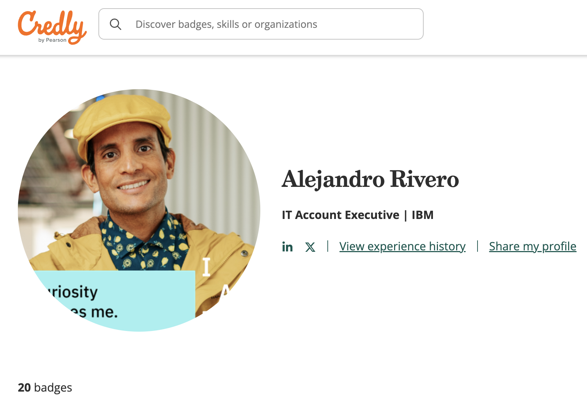

Summary ✔️
IT executive with vast experience in transnational companies, mobilized by the Ubuntu philosophy and promoter of agile work methodologies, generator of trusting relationships and close communication. Always motivated to investigate and use technology as a tool that contributes to the continuous improvement of people and organisations. He stands out for his agility in the search for solutions and for being highly adaptable to changes with a focus on efficiency and innovation of processes and services. Has proven skills to lead multicultural teams and strong skills to influence at different levels of the organisation. Builds and maintains strong relationships with internal teams, partners and customers with a focus on generating value.
Education 👨🏽🎓
- Certified Professional Coach - Newfield Network, CL, 2022.
- Diploma in IT Project Management in Computer Science - University of Chile, CL, 2017.
- Executive Engineer in Computer Science. Degree in Computer Science in Computer Science - Universidad de Chile, CL, 2017. University of the Americas, CL, 2005.
- Systems Analyst in Computer Science, ASPRO, CL, 1997.
Work experience ⚙️
- SCRUM Master - IBM, Chile | Jan 2023 - Present
Responsible for the resolution of technical and human impediments to the project, managing to address issues in a timely manner and ensuring the achievement of objectives. Promoter of a relationship of trust with the client and the internal team, establishing an environment of collaboration and active participation in the development and search for value in the proposed solution.
- Application Architect - IBM, Chile | Aug 2022 - Dec 2022
Participated in the assesment and design of the modernisation of banking systems (ALTAMIRA running on IBM "POWER" platform) resulting in the automation of business processes and satisfying the client's needs. The resulting design can be executed on cloud platforms (AWS). Best practices for critical evaluation, selection and development of software components were applied and considered, and methods, processes and best practices for development, QA and move to production were selected.
- Deputy Manager IT Operations and Services - SITRANS Ltda., Chile | Aug 2017 - Nov 2021
Responsible for leading, designing and implementing the IT services and operations strategy across the country, ensuring operational continuity and service level compliance, managing development and infrastructure projects and contributing to the IT and business strategy.
Key achievements:
- Response to multiple cybersecurity attacks and recovery.
- Reduced IT budget by 15%.
- Leading and advising on the migration process of ULTRAMAR's IT infrastructure to new vendors with
ULTRAMAR to new vendors with significant savings and added value. - Responsible for and driving the migration of environments and systems to the cloud.
- Leader of cybersecurity hardening, driving the adoption of several layers of cloud, physical and cultural security.
- Key player in the implementation of World Class projects such as terminal automation, which modernised and positioned SITRANS as a leader in the sector.
- Promoter of improvements in the working environment of the IT Management, quadrupling the existing quality indicators when he took office. - Responsible for the stabilisation of the IT platform and improvements in the end-user experience.
- Negotiating, managing and closing highly strategic contracts. - Tireless promoter of innovation with constant focus on optimising the operation using new technologies.
- IT Platform and Access Administrator - ULTRAMAR Group, Chile | Nov 2012 - Jan 2017
Responsible for the supervision of outsourced contracts for technological infrastructure services, contributing to continuous improvement and the search for solutions that maximise the profitability of the Holding's Business Units.
Key funtions:
- Management of outsourcing services and compliance with SLAs.
- Management of corporate licences.
- Leading the project to change the security platform of Holding Company
- Actively participating in the project to reduce the cost of ULTRAMAR Holding's corporate platform, which reduced its cost by 40%.
- Coordinate and control the design and maintenance of ULTRAMAR Holding's IT infrastructure and networks.
- Plan and control ULTRAMAR Holding's network and IT platform administration schemes.
- Design and audit corporate policies governing platform and networking service procedures.
Skills 🧰
Team leadership, Coaching, Consulting, Agile methodologies, SCRUM, Team motivation, System administration, Cybersecurity, Teamwork, Multicultural team management, IT infrastructure management,
Customer experience, Conflict resolution, Negotiating with suppliers, Strategic planning, Business networks, Business process improvement, Technological innovation, Self-confidence, Windows Server, Virtualisation (VMware, Hyper-V, Oracle), Microsoft SQL Server.
Certifications and Badges 🏆
You can see it here:

Acerca de mí
Contacto